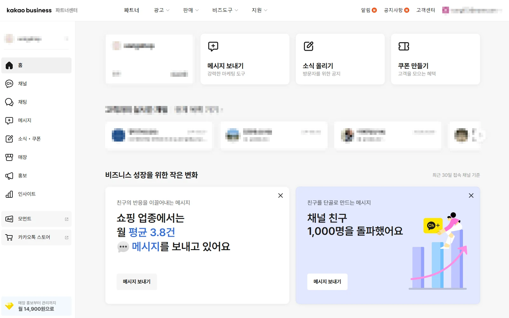
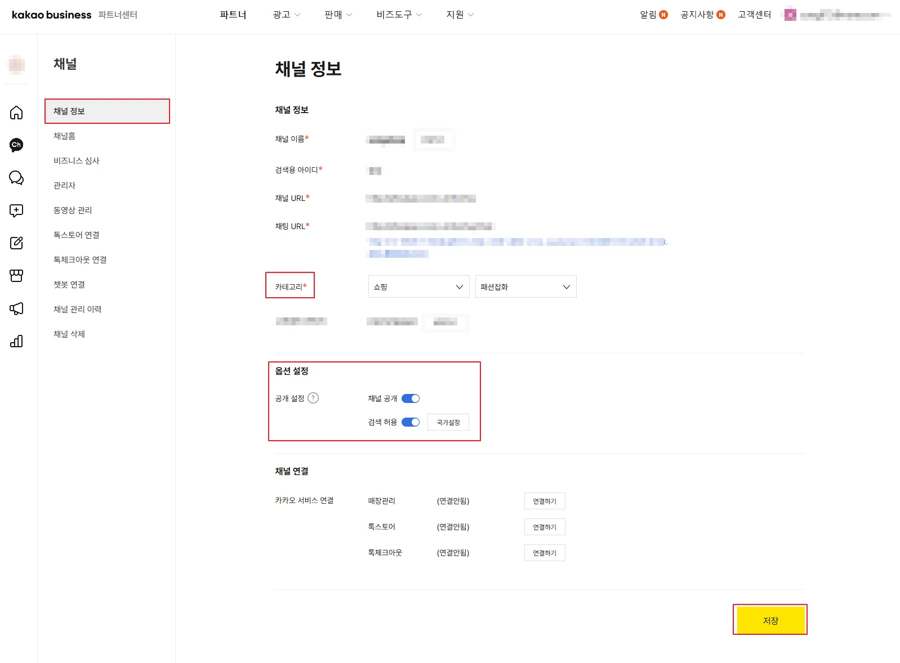
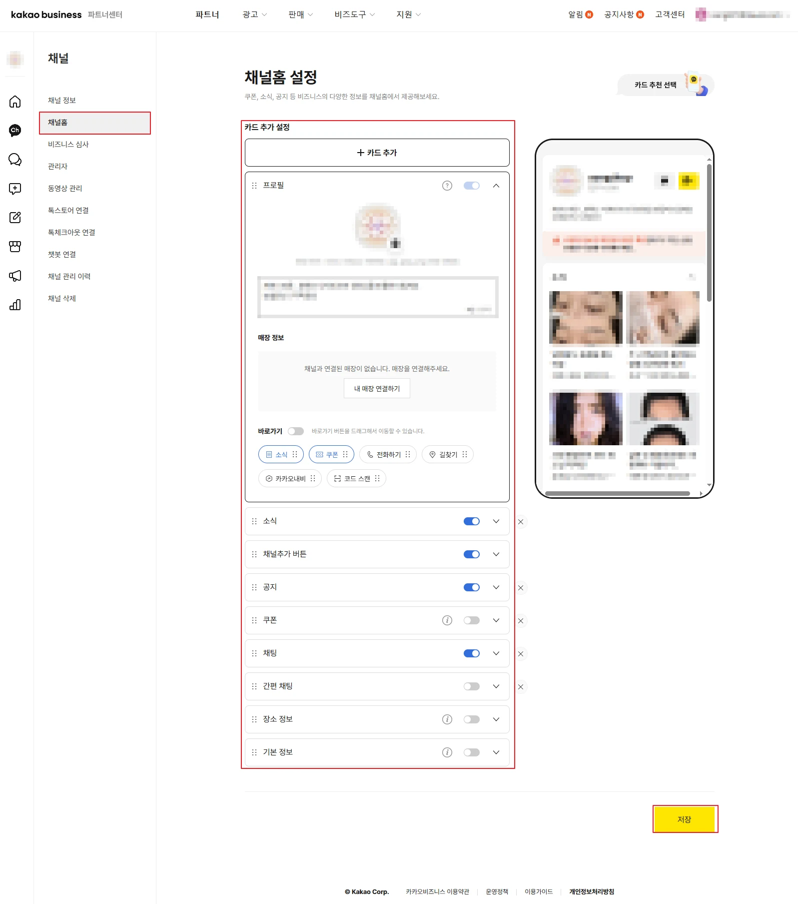
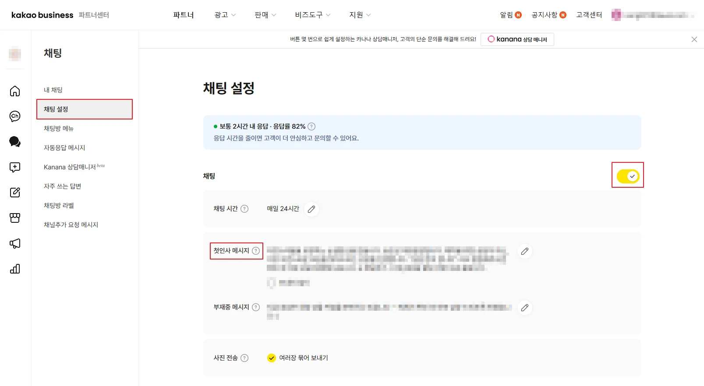
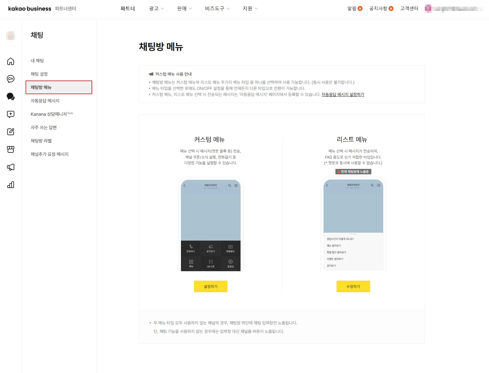

두 손가락으로 확대 · 좌우로 이동
채널을 새로 만드는 것부터 고객 문의를 받을 준비를 마치기까지, 다섯 단계면 충분합니다. 화면 캡처를 그대로 넣어두었으니 같은 화면을 띄워놓고 하나씩 따라와 주세요.
카카오 비즈니스 → 채널 개설
카카오계정으로 business.kakao.com에 로그인한 뒤 새 채널을 개설합니다. 개설 자체는 무료이고, 심사 없이 바로 만들어집니다. 만들 때 입력하는 값은 나중에 대부분 수정할 수 있으니 부담 갖지 않으셔도 괜찮아요.
개설이 끝나면 아래와 같은 파트너센터 홈으로 들어오게 됩니다. 왼쪽 사이드바가 이 가이드의 지도예요. 채널 메뉴에서 2·3단계를, 채팅 메뉴에서 4·5단계를 진행합니다. 위쪽의 메시지 보내기·소식 올리기·쿠폰 만들기는 세팅을 마친 뒤에 쓰는 기능이라 지금은 지나쳐도 됩니다.

채널 > 채널 정보
채널의 신분증에 해당하는 화면입니다. 개설할 때 입력한 이름과 아이디를 다시 확인하고, 검색 노출을 좌우하는 두 가지를 여기서 정합니다.

채널 > 채널홈
카드를 쌓아서 만드는 페이지입니다. 왼쪽에서 카드를 켜고 끄면 오른쪽 미리보기에 바로 반영되니, 실제 화면을 보면서 조정해 보세요. 카드 왼쪽의 손잡이 아이콘을 잡고 끌면 순서를 바꿀 수 있습니다.
프로필 카드 안의 바로가기 토글을 켜면 소식·쿠폰·전화하기·길찾기·카카오내비·코드 스캔 버튼을 붙일 수 있습니다. 여섯 개를 다 넣기보다 실제로 눌릴 두세 개만 남기시는 편이 깔끔해요. 오프라인 매장이 있다면 내 매장 연결하기로 매장 정보를 붙여두시면 됩니다. 여기도 마지막에 저장을 꼭 눌러 주세요.

채팅 > 채팅 설정
오른쪽 위 노란 토글이 채팅 기능 전체 스위치입니다. 이것부터 켜신 다음 아래 항목을 채워 주세요. 화면 위쪽에 보이는 응답률과 평균 응답 시간은 고객에게도 노출되는 지표입니다.

채팅 > 채팅방 메뉴
채팅방 아래쪽에 붙는 메뉴입니다. 두 타입을 동시에 쓸 수는 없지만, 하나를 고른 뒤에도 ON/OFF로 언제든 바꿀 수 있으니 편하게 골라 보세요.
아이콘 버튼이 격자로 놓입니다. 전화걸기, 쿠폰·소식 실행, 챗봇 블록 전송 같은 기능을 바로 실행할 수 있어요.
질문이 줄줄이 나열되고, 고객이 고르면 정해둔 답변이 전송됩니다. 챗봇과는 함께 쓸 수 없습니다.
두 타입을 모두 끄면 채팅방 아래에는 입력창만 남습니다. 채팅 기능 자체를 쓰지 않으실 경우에는 입력창 대신 채널홈 버튼이 노출됩니다.

이후에 이어지는 메시지 발송, 소식 · 쿠폰 등록, 비즈니스 채널 인증(비즈니스 심사)은 채널이 살아 있는 상태에서 진행하는 별도 작업입니다. 필요하실 때 안내해 드릴게요.
화면 구성은 카카오 정책에 따라 조금씩 달라질 수 있습니다.
세팅 자체는 30분이면 끝납니다. 어려운 건 그 다음이에요. 우리 샵 이름으로 뭐가 검색되게 할지, 첫인사에 뭘 적을지, 들어온 문의를 어떻게 예약까지 끌고 갈지. 이건 혼자 앉아서 고민한다고 답이 나오는 종류가 아닙니다. 같은 고민을 지금 하고 있는 사람들 사이에 있는 편이 훨씬 빠릅니다.
눈팅만 하셔도 됩니다 · 실명·연락처 노출 없음 · 참여비 없음 · 언제든 나가기 가능